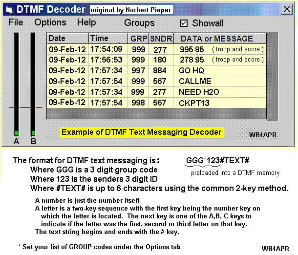
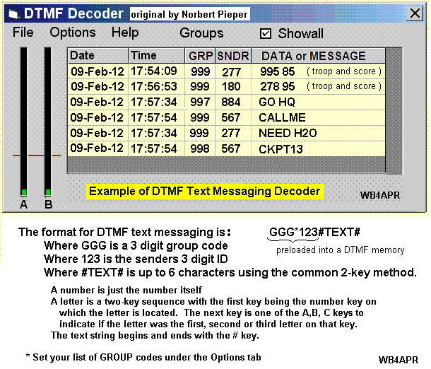

Adding TEXT Message Support for FT-51R and TH-78 HT's
Adding another 300,000 Radios to the Universal Amateur Radio Text Messaging Initiative!
Use these radios for local and global amateur and email Messaging or
for display of local APRS, Satellite and INFO distribution!
This web page topic is just part of a larger APRS objective to provide
useful local information content directly to Amateur radio operators in
the field. There are several initiatives.
* The routine display of local APRS data from an APRS=>DTMF Gateway.
* The Universal Amateur Radio Text Messaging Initiative.
* Using these DTMF Text Messsaging radios for event data reporting for
rapidly sending data to net control or HQ, or EOC at special events.
* Using one of these radios at Net control so that ANYONE from ANY
existing HT can send keypad data into net control
* Using these radios to send text messages to net control's PC for display
* Using ANY other HT to send DTMF data to net control's PC for display
The DTMF DISPLAY RADIOS: The Yaesu FT-11R, FT-41R, & FT-51R and Kenwood TH-78 HT's
all contain a DTMF text message TX and RX display system. The messages are
typically 6 bytes long but can be combined into up to 10 such messages for
a full length of 60 bytes of uppercase message text.
 We can use these radios for RECEIPT of APRS local
information of value to the traveler and for paging.
Since they also make excellent cross-band full duplex
radio for Amateur Satellite operation as well, the
messaging function can be used for transmitting
satellites-in-view alerts to handheld and mobile
operators on their front panels. This information also contains the
frequencies of operation too... For example, they can display
these things:
FIXED Stations (bearing and range from Gate, and PHG data)
MOBILE Stations (Bearing and range from Gate, and Course and Speed
WEATHER stations (Wind direction and speed and temp)
DIGIPEATERS (bearing and range from Gate, and Wn-N supported
MESSAGES (in 6 byte sextets)
FREQUENCIES (for any station sending FFF.FFFMHz info)
STATUS (any short status info)
APRS => DTMF GATEWAY: So, with this APRS=>DTMF gateway, not only can
these radios receive DTMF Text messaging from *ANY* other amateur radio with
a DTMF key pad, they can also now receive all local APRS activity on their
front panel displays.
For Further details, specifically on the APRS=>DTMF Gateway function
please see the APRS=>DTMF Gateway web page.
DISPLAYING LOCAL IN-VIEW SATELLITE INFO: This next image shows how the
satellite information appears on an APRS TH-D7 display, but the same
information can be sent via DTMF to the displays
of all TH-78 and FT-51R radios as well. Since the
display shows the operating frequency of the satellite,
the radio user has all he needs to tune in an operate
that satellite. For more information on the Satellite
Annunciation process for alerting mobile operators to
satellites in view, please see APRSdata.html
We can use these radios now as receive/display units at special events
by pre-storing text messages in everyone else's DTMF memories for
sending data from the field to the display. Or we can use these
radios or any other HT with a DTMF pad to send short text messages
to net control for display on his PC as shown below:

GENERAL APRS <=> DTMF CONVERSIONS: It is assumed that this APRS to DTMF Gateway
process will be added to any amateur radio program that can do both APRS
and DTMF, such as the general APRS Touchtone system. The links above to
tThe APRS=>DTMF Gateway link above shows how this can be easily applied
to some small stand-alone station to make it easy to implement at very
high and remote repeater locations to serve very large areas.
Here is how it works.
DTMF PAGING FORMAT: First of all, since there are going to be a lot
of DTMF tones flying around, it is recommended that the HT51/78 gateway
have its own local frequency dedicated to these radio users.
The DTMF format used by these radios (see DTMF-Paging spec) is:
GGG*CCC is the header to open the paging squelch
#MMMMMMMMMMMM# is the message (after the page)
#mmmmmmmmmmmm# is and additional line of text, etc
Where GGG is the TO-CALL or GROUP PAGE (999) for APRS
Where CCC is the sending station's Caller ID. This is usually
formed as the numeric equivalent of the stations
amateur call suffix. Example, APR is 277.
Where MMMMMMMMMMM is up to 6 bytes of text entered using the
two-key method of these radios. That is, press the desired letter
key, ABC, DEF, GHI, etc and then press the "A" key if the letter was
the first one listed on the key. Or press "B" key if it was the
second letter, or press the "C" key if it was third. If it is a
numeral, then there is no following special key. The 1 key is
used for QZ_. So Q is 1A, Z is 1B and SPACE is 1C.
Notice that these radios not only monitor the TTT group code, but
also their own individual codes. So an APRS message can be sent to
an INDIVIDUAL radio. The APRS=>HT51/78 gateway can automatically do
the conversion from callsign suffix to the matching 3 digit TTT ID.
For APRS, there are 6 group codes, 994 to 999 which identify the
type of data, FIXED, MOBILE, OBJECTS, WEATHER, MESSAGES, etc.
This lets the owner of the FT51/TH78 opt-out of any particular data
he is not interested in.
APRS PARSING: See how the APRS data is parsed into the small 6
byte wide windows on the above links to the APRS=>DTMF Gateway system.
This allows these radios to be used to monitor for APRS activity and
to be paged or sent messages from the APRS system!
In fact, this gateway can be implementd so simply, that it could be
put on a PIC chip and placed on a mountain top for full coverage
wide area limited APRS operation with these 1995's vintage radios.
Bob, Wb4APR
We can use these radios for RECEIPT of APRS local
information of value to the traveler and for paging.
Since they also make excellent cross-band full duplex
radio for Amateur Satellite operation as well, the
messaging function can be used for transmitting
satellites-in-view alerts to handheld and mobile
operators on their front panels. This information also contains the
frequencies of operation too... For example, they can display
these things:
FIXED Stations (bearing and range from Gate, and PHG data)
MOBILE Stations (Bearing and range from Gate, and Course and Speed
WEATHER stations (Wind direction and speed and temp)
DIGIPEATERS (bearing and range from Gate, and Wn-N supported
MESSAGES (in 6 byte sextets)
FREQUENCIES (for any station sending FFF.FFFMHz info)
STATUS (any short status info)
APRS => DTMF GATEWAY: So, with this APRS=>DTMF gateway, not only can
these radios receive DTMF Text messaging from *ANY* other amateur radio with
a DTMF key pad, they can also now receive all local APRS activity on their
front panel displays.
For Further details, specifically on the APRS=>DTMF Gateway function
please see the APRS=>DTMF Gateway web page.
DISPLAYING LOCAL IN-VIEW SATELLITE INFO: This next image shows how the
satellite information appears on an APRS TH-D7 display, but the same
information can be sent via DTMF to the displays
of all TH-78 and FT-51R radios as well. Since the
display shows the operating frequency of the satellite,
the radio user has all he needs to tune in an operate
that satellite. For more information on the Satellite
Annunciation process for alerting mobile operators to
satellites in view, please see APRSdata.html
We can use these radios now as receive/display units at special events
by pre-storing text messages in everyone else's DTMF memories for
sending data from the field to the display. Or we can use these
radios or any other HT with a DTMF pad to send short text messages
to net control for display on his PC as shown below:

GENERAL APRS <=> DTMF CONVERSIONS: It is assumed that this APRS to DTMF Gateway
process will be added to any amateur radio program that can do both APRS
and DTMF, such as the general APRS Touchtone system. The links above to
tThe APRS=>DTMF Gateway link above shows how this can be easily applied
to some small stand-alone station to make it easy to implement at very
high and remote repeater locations to serve very large areas.
Here is how it works.
DTMF PAGING FORMAT: First of all, since there are going to be a lot
of DTMF tones flying around, it is recommended that the HT51/78 gateway
have its own local frequency dedicated to these radio users.
The DTMF format used by these radios (see DTMF-Paging spec) is:
GGG*CCC is the header to open the paging squelch
#MMMMMMMMMMMM# is the message (after the page)
#mmmmmmmmmmmm# is and additional line of text, etc
Where GGG is the TO-CALL or GROUP PAGE (999) for APRS
Where CCC is the sending station's Caller ID. This is usually
formed as the numeric equivalent of the stations
amateur call suffix. Example, APR is 277.
Where MMMMMMMMMMM is up to 6 bytes of text entered using the
two-key method of these radios. That is, press the desired letter
key, ABC, DEF, GHI, etc and then press the "A" key if the letter was
the first one listed on the key. Or press "B" key if it was the
second letter, or press the "C" key if it was third. If it is a
numeral, then there is no following special key. The 1 key is
used for QZ_. So Q is 1A, Z is 1B and SPACE is 1C.
Notice that these radios not only monitor the TTT group code, but
also their own individual codes. So an APRS message can be sent to
an INDIVIDUAL radio. The APRS=>HT51/78 gateway can automatically do
the conversion from callsign suffix to the matching 3 digit TTT ID.
For APRS, there are 6 group codes, 994 to 999 which identify the
type of data, FIXED, MOBILE, OBJECTS, WEATHER, MESSAGES, etc.
This lets the owner of the FT51/TH78 opt-out of any particular data
he is not interested in.
APRS PARSING: See how the APRS data is parsed into the small 6
byte wide windows on the above links to the APRS=>DTMF Gateway system.
This allows these radios to be used to monitor for APRS activity and
to be paged or sent messages from the APRS system!
In fact, this gateway can be implementd so simply, that it could be
put on a PIC chip and placed on a mountain top for full coverage
wide area limited APRS operation with these 1995's vintage radios.
Bob, Wb4APR
{kind=link}